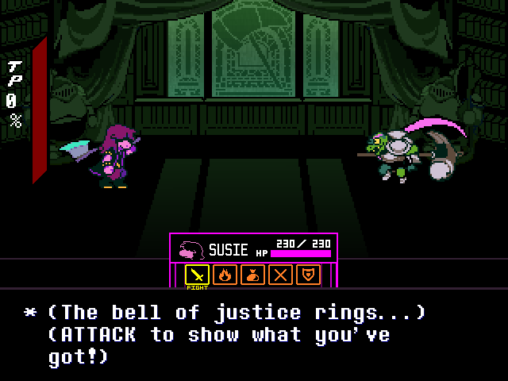
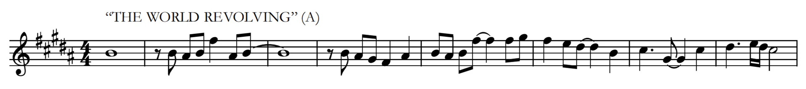
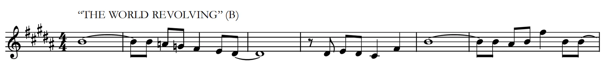
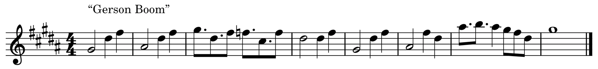
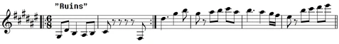
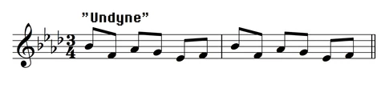

Hammer of Justice
This track plays as you or Susie fights Gerson Boom in Chapter 4 in Deltarune. This is the 58th track in the Chapter 3 & 4 OST. The BPM is 160 at times of 0:00-0:58 and 1:25-2:13, while it is 154 BPM at 0:59-1:24. The key is a C minor at 0:00-1:50 and an E-flat major at 1:50-2:13 with an overall time signature of 4/4. This track started to be developed way back in 2016, but was completed seven years later. What makes this track iconic is the banjo segment that occurs during 0:59-1:24. I say it's iconic as everyone who remixes the track keeps the banjo segment untouched, never altering it.
This track have 4 leitmotif with 2 of them being from Undertale. They are: THE WORLD REVOLVING, Gerson Boom, Ruins, and Undyne.

THE WORLD REVOLVING leitmotif


All the tracks that have this leitmotif are:
- "The Circus" (At 0:14-0:15 & 0:34-0:35, part 2):
- "THE WORLD REVOLVING" (At 0:20-0:40 (part 1) & 1:00-1:20 (part 2)):
- "Dialtone" (part 2):
- "BIG SHOT" (At 0:54-1:22, part 1):
- "Hammer of Justice" (At 1:48-2:13, part 1):
- "AIRWAVES" (At 1:26-1:58, part 1):
Gerson Boom leitmotif

All the tracks that have this leitmotif are:
- "Gyaa Ha ha!" (At 0:57-1:12):
- "Wise words":
- "Hammer of Justice" (At 0:59-1:49):
- "Need a hand!?" (At 0:00-0:23):
Ruins leitmotif

All the tracks that have this leitmotif are:
- "Gyaa Ha ha!" (At 0:27-0:55):
- "Hammer of Justice" (At 0:24-0:59):
- "Fireplace" (At 1:04-2:03):
- "Need a hand!?" (At 0:23-0:46):
Undyne leitmotif

All the tracks that have this leitmotif are:
- "Gyaa Ha ha!" (At 0:00-0:24):
- "Hammer of Justice" (At 0:00-0:24):
- "Fireplace" (At 0:34-1:04 & 2:04-2:37):
- "Wise words" (At 0:04-0:07, 0:16-0:19, 0:26-0:29, & 0:37-0:40):
- "honksong" (At 0:16-0:21):
Reference
- “Hammer of Justice (Soundtrack).” Deltarune Wiki, 28 Feb. 2026, deltarune.wiki/w/Hammer_of_Justice_(soundtrack).
- “Leitmotifs.” The Deltarune Wiki, 4 Apr. 2026, deltarune.wiki/w/Leitmotifs#THE_WORLD_REVOLVING.
- “Leitmotifs.” The Deltarune Wiki, 4 Apr. 2026, deltarune.wiki/w/Leitmotifs#Gerson_Boom.
- “Leitmotifs.” The Deltarune Wiki, 4 Apr. 2026, deltarune.wiki/w/Leitmotifs#Ruins.
- “Leitmotifs.” The Deltarune Wiki, 4 Apr. 2026, deltarune.wiki/w/Leitmotifs#Undyne.